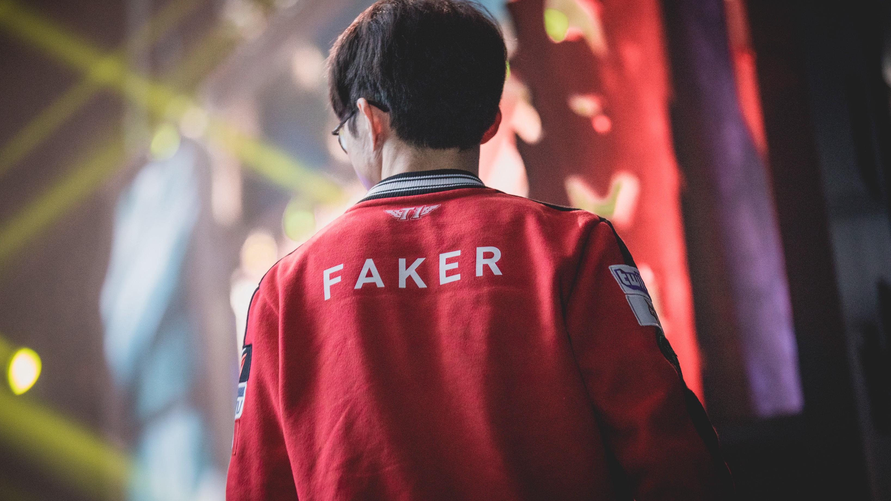

The Demon King
World's Best League of Legends player of all time

'One of only two players to have won the League of Legends World Championship three times.'
Here is a timeline of Faker's career:
- Season 3 - Faker was picked up by SK Telecom T1 K in 2013 as their starting mid laner. SKT T1 K dominated the Korean scene and in October 2013 Faker led them to win their first League of Legends World Championship. Later in the HOT6iX Champions Summer 2013, Faker cemented his status as a brilliant player due to his perfect outplay against KT Rolster Bullets mid laner Yoo "Ryu" Sang-wook, which would then become one of the most iconic moments in League of Legends history.
- Season 4 -In 2014, SK Telecom T1 K followed their success through in the OGN winter season, making the entire run without dropping a single game. They would then go on to win All-Star Paris 2014. However, their Winter season success did not follow through and during the Spring and Summer seasons, SKT T1 K failed to qualify for the 2014 World Championship. In the following offseason, Riot Games changed the team regulations so that each organisation can only have one team participating in each league. This led to the merger of SKT T1 K and SKT T1 S, and the subsequent departures of Impact and Piglet for the NA LCS. The new team would compete under the name SKT T1.
- Season 5 - Throughout 2015, Faker shared the mid lane position with Lee "Easyhoon" Ji-hoon. Depending on the team composition SKT wanted to play, either one of the players could be substituted into the game. Faker had many notable performances in the LCK such as a pentakill against NaJin e-mFire with his LeBlanc. SKT ended the summer split in first place and advanced to the world championship.At the 2015 World Championship, Faker and his team won while only dropping one game in the finals for a record of 15–1 throughout the series.
- Season 6 - On July 11, 2016, Faker became the first player to reach 1,000 kills in the LCK. His 1,000th kill was on MVP Beyond's Reksai, which he achieved with his Malzahar. SKT placed third in the 2016 LCK Summer Split, but still qualified for the 2016 World Championship through circuit points. The team swept through the group stage and advanced towards the playoff round. In the semifinals they defeated the ROX Tigers in a close 3–2 series. In the finals they defeated Samsung Galaxy in another close 3–2 series, winning their third world championship title. Faker was voted as the Most Valuable Player of the tournament.
- Season 7 - On February 6, 2017, Faker recorded his first live stream on Twitch and had a peak viewership of 245,100, setting a record at the time for the most views for a single streamer in the history of the site. However, this record was broken in early 2018 by another League of Legends streamer named Tyler1. At the 2017 World Championship, SKT were still considered by many to be strong favourites to lift the cup for a third consecutive time despite not winning the LCK. After a dominant group stage conceding just a single loss, SKT narrowly defeated Misfits and Royal Never Give Up in the quarterfinals and semifinals respectively, before having to face Samsung Galaxy in a repeat of the previous year's final. SKT's fate was sealed after Faker was caught by a flash Varus ult move by Samsung's AD carry Ruler, resulting in Samsung Galaxy clean sweeping SKT 3–0, ending the SKT domination at the World Championship
I’m not thinking, I’m just acting. It’s almost an animalistic instinct, I just do what I need to do.
If you have time, you can watch Faker's stream on https://www.twitch.tv/faker.